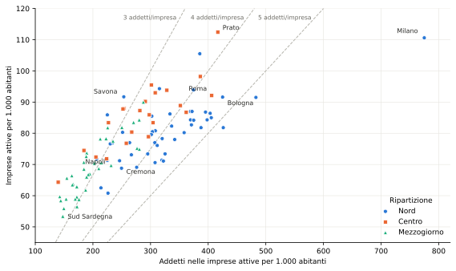

Imprese per mille abitanti
Che cosa misura il rapporto e perché non basta a identificare la propensione imprenditoriale
Paolo Volterra ![]()
Italiano. Il numero di imprese attive per mille abitanti è una misura di densità del tessuto produttivo. Uno studio provinciale pubblicato nel 2026 lo denomina «tasso di imprenditorialità» e lo interpreta come rappresentazione della diffusione della voglia e della possibilità di intraprendere. Questa nota valuta tale interpretazione alla luce del quadro OCSE-Eurostat adottato dall’ISTAT. In quel quadro l’imprenditorialità è un fenomeno multidimensionale, osservato attraverso determinanti, performance e impatto; le statistiche ufficiali privilegiano natalità, mortalità, sopravvivenza, crescita e occupazione delle imprese. Il rapporto fra stock di imprese e residenti non identifica separatamente questi processi. Per identità contabile dipende sia dagli addetti nelle imprese per abitante sia dalla dimensione media; risente inoltre della struttura settoriale, della popolazione scelta come denominatore e della localizzazione per sede. L’applicazione alle province italiane mostra che la misura contiene informazione economica, ma non consente da sola di attribuire le differenze territoriali a una diversa propensione imprenditoriale. Le verifiche numeriche dello studio provinciale sono riportate separatamente in appendice.
English. Active enterprises per thousand inhabitants measure the density of the productive fabric. A provincial study published in 2026 labels this ratio an “entrepreneurship rate” and interprets it as representing how widely the willingness and opportunity to undertake business activity are distributed. This paper assesses that interpretation against the OECD-Eurostat framework adopted by the Italian National Institute of Statistics. In that framework entrepreneurship is multidimensional and is observed through determinants, performance and impact; official statistics focus on business births, deaths, survival, growth and employment. A stock of enterprises relative to residents does not separately identify these processes. By accounting identity, it depends on both employment in enterprises per inhabitant and average firm size; it is also affected by sectoral structure, the population used as denominator and head-office location. The application to Italian provinces shows that the ratio contains economic information, but cannot by itself attribute territorial differences to entrepreneurial propensity. Numerical checks of the provincial study are reported separately in the appendix.
imprenditorialità, demografia d’impresa, imprese attive, province, OCSE, Eurostat, ISTAT, CNA
1 Oggetto dell’analisi
Nel luglio 2026 l’Area Studi e Ricerche della CNA ha pubblicato un’analisi della distribuzione territoriale di imprese e addetti [1]. Il documento definisce «tasso di imprenditorialità» il numero di imprese attive ogni mille abitanti e lo considera l’indicatore forse più appropriato per rappresentare la propensione imprenditoriale di un territorio. Secondo lo studio, la quota molto elevata di imprese con meno di dieci addetti rende il rapporto una rappresentazione di quanto la voglia e la possibilità di intraprendere siano diffuse nella popolazione. La stessa interpretazione è stata ripresa da CRIBIS, che presenta Prato, Milano e Rimini come le province con maggiore propensione imprenditoriale e usa la graduatoria CNA come base dell’articolo [2]. La ripresa ha valore documentale per osservare la circolazione dell’etichetta, ma non costituisce una validazione indipendente della misura.
Questa proposizione contiene due passaggi distinti. Il primo è descrittivo: rapportare le imprese alla popolazione consente di confrontare territori di diversa dimensione. Il secondo è interpretativo: le differenze nel rapporto sono attribuite a una diversa propensione imprenditoriale. L’analisi che segue riguarda questo secondo passaggio. Non assume che lo studio ignori l’eterogeneità territoriale: il documento richiama esplicitamente distretti produttivi, turismo, grandi imprese, impiego pubblico, agricoltura, demografia, immigrazione, mercati, capitale sociale, infrastrutture, credito e burocrazia. La questione è se un solo rapporto di stock permetta di sintetizzare tali meccanismi e di identificarli come propensione a intraprendere.
2 Il quadro ufficiale di misurazione
2.1 Un fenomeno multidimensionale
Il quadro adottato dall’ISTAT deriva dall’Entrepreneurship Indicators Programme dell’OCSE e di Eurostat [3]. L’imprenditorialità è associata alla ricerca di creazione di valore attraverso la nascita o l’espansione di un’attività economica, l’introduzione di prodotti e processi e l’accesso a nuovi mercati. Il sistema di misurazione distingue tre categorie:
| Categoria | Domanda | Principali misure |
|---|---|---|
| Determinanti | Quali condizioni favoriscono o frenano l’attività imprenditoriale? | Regolazione, mercato, credito, ricerca e sviluppo, capacità e cultura imprenditoriali |
| Performance | Quali processi e risultati caratterizzano le imprese? | Natalità, mortalità, turnover, sopravvivenza, imprese ad alta crescita e gazelle |
| Impatto | Quali effetti produce l’attività imprenditoriale? | Occupazione, crescita economica e altri risultati sociali |
In parole semplici: l’imprenditorialità non è rappresentata da un solo conteggio. Il quadro ufficiale separa le condizioni che la rendono possibile, ciò che accade alle imprese e gli effetti prodotti.
La scheda qualità più recente dell’ISTAT conferma questa impostazione operativa [4]. La popolazione delle imprese attive è la base osservata; gli indicatori riguardano nascite e cessazioni reali, sopravvivenza fino a cinque anni, imprese ad elevata crescita e addetti. Le nascite escludono fusioni, scorpori e altre trasformazioni di unità già esistenti; le cessazioni sono confermate dopo due anni per escludere le riattivazioni. Nel volume metodologico l’ISTAT considera il tasso di natalità delle imprese con dipendenti più significativo, ai fini dell’imprenditorialità, dello stesso tasso calcolato su tutte le imprese attive [3].
2.2 Rapporto descrittivo e indicatore di propensione
L’ISTAT pubblica anche il numero di imprese per mille abitanti, denominandolo in modo descrittivo [5]. La presenza di questa statistica ufficiale non basta però ad assegnarle il significato di propensione imprenditoriale. Per sostenere tale interpretazione occorrerebbe mostrare che il rapporto varia coerentemente con manifestazioni osservabili del fenomeno, come la nascita di nuove imprese, la loro sopravvivenza, la crescita o l’ingresso di nuovi imprenditori, e che conserva tale relazione una volta considerate struttura settoriale e condizioni territoriali.
3 Valutazione della misura proposta
3.1 Stock e processi
Le imprese attive in un anno costituiscono uno stock formato da coorti nate in periodi diversi. Il suo livello dipende dalle nascite, dalle cessazioni, dalla sopravvivenza e dalle trasformazioni avvenute nel tempo. Due territori possono avere lo stesso numero di imprese per abitante pur presentando dinamiche opposte: uno può avere molte nuove imprese e molte cessazioni; l’altro poche nascite e imprese longeve. Il rapporto non distingue queste configurazioni e non osserva direttamente la decisione corrente di intraprendere.
La motivazione fondata sul peso delle microimprese non risolve il problema. Il fatto che la maggioranza delle imprese abbia meno di dieci addetti descrive la distribuzione dimensionale, ma non dimostra che ogni impresa attiva rappresenti nella stessa misura propensione, opportunità o capacità imprenditoriale. Nel registro statistico rientrano lavoratori autonomi, liberi professionisti e imprese organizzate in forme e settori molto differenti [6].
3.2 Una scomposizione diagnostica
Il rapporto può essere riscritto mediante un’identità contabile:
\[\frac{\text{imprese}}{\text{residenti}} = \frac{\text{addetti}/\text{residenti}} {\text{addetti}/\text{imprese}}.\]
L’identità non confuta la misura e non stabilisce quale componente determini le differenze territoriali. Mostra però che lo stesso valore può derivare dalla quantità di lavoro presente nelle imprese, dalla dimensione media o da combinazioni diverse delle due grandezze. Per attribuire il rapporto a una propensione individuale serve quindi evidenza ulteriore.
Fra le province italiane la correlazione di rango del rapporto con gli addetti nelle imprese per abitante è 0,80; quella con la dimensione media è 0,51. Il primo legame è più stretto, ma il confronto fra due correlazioni non scompone la varianza e non identifica relazioni causali. Indica soltanto che la graduatoria provinciale riflette in misura rilevante la diversa intensità dell’occupazione nelle imprese.

Figura 1: Imprese attive e addetti nelle imprese per 1.000 abitanti nelle province italiane, 2024. Le linee tratteggiate indicano dimensioni medie costanti di 3, 4 e 5 addetti per impresa.
In parole semplici: salire nel grafico significa avere più imprese rispetto ai residenti; spostarsi a destra significa avere più addetti nelle imprese. Province alla stessa altezza possono raggiungere lo stesso rapporto con quantità di lavoro e dimensioni medie differenti.
Savona e Bologna hanno quasi lo stesso rapporto: 91,7 e 91,6 imprese ogni mille abitanti. A Savona gli addetti sono 254 ogni mille abitanti e la dimensione media è 2,8; a Bologna i valori sono 425 e 4,6. La coincidenza del rapporto non implica quindi equivalenza della struttura produttiva né dimostra una propensione imprenditoriale identica.
3.3 Denominatore e localizzazione
La popolazione residente è un denominatore disponibile e confrontabile, ma non coincide sempre con la popolazione esposta alle opportunità economiche del territorio. Nelle località turistiche la domanda comprende visitatori non residenti; nelle aree metropolitane intervengono pendolari in entrata e in uscita; la quota di popolazione in età lavorativa varia tra territori. Questi elementi non rendono inutile il rapporto, ma ne limitano l’interpretazione comportamentale.
Distinto è il problema della localizzazione del numeratore. Le imprese sono attribuite alla sede; gli addetti di un’impresa plurilocalizzata possono lavorare in unità locali situate in altre province. Il volume ISTAT dedicato all’imprenditorialità territoriale tratta separatamente imprese, unità locali, proiezione esterna e attrattività proprio per evitare di sovrapporre sede dell’organizzazione e luogo dell’attività [3].
4 Uso appropriato del rapporto
Il numero di imprese per mille abitanti è utile per descrivere quanto è numerosa la popolazione delle imprese rispetto alla popolazione residente. Può segnalare territori nei quali approfondire la composizione settoriale, le forme giuridiche, la demografia d’impresa e il mercato del lavoro. Non è invece sufficiente, senza validazione, per ordinare i territori secondo la voglia o la possibilità di intraprendere.
| Domanda conoscitiva | Misura pertinente |
|---|---|
| Quante imprese sono presenti rispetto alla popolazione? | Imprese attive per residente |
| Quante nuove iniziative economiche nascono? | Tasso di natalità delle imprese, preferibilmente distinguendo quelle con dipendenti |
| Quanto sono persistenti? | Sopravvivenza a tre e cinque anni |
| Quante sviluppano occupazione? | Addetti delle nuove imprese, imprese ad alta crescita e gazelle |
| Chi intraprende? | Caratteristiche degli imprenditori, ingressi e forme giuridiche |
| Quali condizioni favoriscono l’attività? | Indicatori di credito, regolazione, mercato, competenze, ricerca e cultura |
In parole semplici: ogni domanda richiede una misura diversa. Il rapporto fra imprese e abitanti risponde a una domanda di consistenza, mentre propensione, nascita, sopravvivenza e crescita descrivono processi differenti.
Un indicatore composito sarebbe possibile, ma richiederebbe una teoria esplicita, la scelta motivata delle dimensioni, regole di normalizzazione e ponderazione, analisi di sensibilità e validazione rispetto a esiti osservabili. Il rapporto ISTAT sulla competitività del 2020 offre un esempio del procedimento: definisce la reattività delle imprese, la stima sulle unità elementari, ne separa le componenti dirette e indirette e soltanto dopo la aggrega per settori e territori [7]. Lo studio provinciale non propone questa costruzione: attribuisce un significato ampio a un singolo rapporto descrittivo.
5 Conclusioni
Lo studio CNA non ignora la complessità territoriale e individua numerosi fattori plausibili alla base delle differenze provinciali. Il limite riguarda il passaggio dalla descrizione all’interpretazione: il numero di imprese attive per mille abitanti viene denominato «tasso di imprenditorialità» senza una validazione che lo colleghi in modo univoco alla voglia e alla possibilità di intraprendere.
Il quadro OCSE-Eurostat adottato dall’ISTAT tratta l’imprenditorialità come un sistema di determinanti, performance e impatti. Le statistiche di demografia d’impresa osservano nascite, cessazioni, sopravvivenza, crescita e occupazione, distinguendo lo stock delle imprese attive dai processi che lo modificano. Questo è il termine di confronto appropriato.
La scomposizione contabile e l’applicazione provinciale non dimostrano che il rapporto sia privo di informazione. Mostrano che esso combina intensità occupazionale e dimensione media e che valori uguali possono corrispondere a strutture differenti. La formulazione più prudente è quindi «imprese attive per mille abitanti» o «densità di imprese». L’espressione «propensione imprenditoriale» richiede misure ulteriori e una validazione empirica esplicita.
6 Appendice: verifiche sul caso provinciale
Le verifiche che seguono riguardano la coerenza interna dei dati pubblicati. Non costituiscono il fondamento della valutazione concettuale, che resterebbe invariata anche se tutte le tabelle fossero perfettamente coerenti.
6.1 Ricostruzione della graduatoria
Dividendo le imprese attive 2024 riportate nello studio per la popolazione residente al 1° gennaio 2024 si ottiene lo stesso valore, al decimale, per 106 province su 107 e un dato nazionale di 80,6 [8]. L’unica eccezione è Cremona: la tabella 2 riporta 87,4, mentre imprese e residenti pubblicati implicano 68,8.
6.2 Valori testuali delle grandi città
| Provincia | Testo dello studio | Tabella 2 | Ricalcolo | Posizione |
|---|---|---|---|---|
| Milano | 106,4 | 110,6 | 110,6 | 2ª |
| Firenze | 96,6 | 98,2 | 98,2 | 4ª |
| Roma | 88,7 | 92,1 | 92,1 | 10ª |
| Napoli | 66,7 | 69,7 | 69,7 | 82ª |
| Palermo | 57,5 | 59,6 | 59,6 | 100ª |
Tabella 1: Imprese per 1.000 abitanti: valori citati nel testo, valori della tabella 2 e ricalcolo con la popolazione al 1° gennaio 2024
In parole semplici: per cinque grandi città i valori scritti nel commento non coincidono con la tabella. Il ricalcolo con la popolazione ufficiale conferma i valori tabellari.
6.3 Unità territoriali a «doppia crescita»
Lo studio indica 17 province sopra la media nazionale sia per crescita delle imprese sia per crescita degli addetti, mentre la tavola ne elenca 21. Taranto è inclusa, ma la sua crescita degli addetti e la media sono entrambe pubblicate come +17,2%: con i valori arrotondati non si può stabilire se la prima sia strettamente superiore. La Sardegna, presentata come aggregato regionale, supera entrambe le soglie ma non compare nell’elenco.
| Gruppo | Testo | Elenco pubblicato | Ricalcolo |
|---|---|---|---|
| Imprese e addetti sopra la media | 17 | 21 (con Taranto, senza Sardegna) | 21 (20 province e Sardegna) |
| Solo imprese sopra la media | 4 | 4 | 4 |
| Solo addetti sopra la media | 6 | 6 | 6 |
| Imprese sopra la media, addetti indistinguibili dalla media | — | — | 1 (Taranto) |
| Entrambi sotto la media | 71 | — | 71 |
Tabella 2: Classificazione sui valori arrotondati pubblicati per crescita 2014-2024 di imprese e addetti
In parole semplici: testo, elenco e ricalcolo non restituiscono lo stesso numero di territori. Taranto non è distinguibile dalla media alla precisione pubblicata, quindi il totale non può essere considerato definitivo senza dati non arrotondati.
Riferimenti
Nota metodologica
Questo documento nasce dall’interazione di tre componenti. L’autore definisce le domande, esercita il giudizio critico e assume la responsabilità scientifica ed editoriale del risultato. Strumenti di intelligenza artificiale generativa sono impiegati a supporto della ricerca bibliografica, della lettura, della sintesi, della riorganizzazione argomentativa e della revisione del testo. Un’infrastruttura open source sviluppata dall’autore automatizza il reperimento, l’armonizzazione e il controllo dei dati dalle fonti statistiche ufficiali, e mantiene l’elaborazione documentata e riproducibile.
Le fonti sono pubblicamente accessibili e citate con la loro denominazione ufficiale, così che i dati e le affermazioni possano essere controllati da terzi. La riproduzione integrale dei risultati richiede anche il codice, le estrazioni, i filtri e i parametri impiegati nell’elaborazione. Le tabelle e i grafici sono elaborazioni dell’autore: calcoli, aggregazioni, trasformazioni e scelte di rappresentazione sono attribuibili all’autore e non agli enti produttori dei dati.
La responsabilità per le fonti utilizzate, le analisi condotte, le elaborazioni effettuate, le interpretazioni proposte e le conclusioni formulate resta interamente in capo all’autore. L’intelligenza artificiale è stata impiegata come ambiente di supporto cognitivo ed editoriale, non come fonte primaria, autore autonomo o sostituto del giudizio critico.